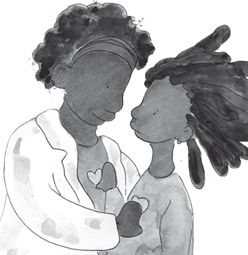
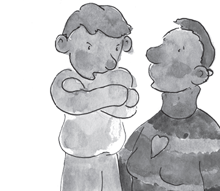

THE ARIO
INFORMATION FOR ADULTS
ADULTS BENEFIT FROM LISTENING TO CHILDREN
BENEFITS FROM LISTENING
Adults ask open questions to invite children to talk about what they know. As the children speak, and they recognize the adult is listening, they can feel comfortable to continue to share their ideas, thoughts and feelings.
Adults can listen patiently to all children know about the virus. Some of their information will be factual some will not. After the children respond, the adults praise the children for sharing what they know. They repeat what the children said that is correct. Without saying, “NO, that’s wrong”, they hear what is inaccurate and explain the facts.
Importantly, when adults talk to groups be sure the children are listening to each other. CHATS need to be safe spaces to talk freely so it is important that adults prevent children from teasing or bullying each other The adult is responsbile for the chat and needs to be sure all children can chat safely.

CHILD SAYS NO: “I DON’T NEED TO TALK ABOUT COVID-19!”

Let’s imagine a child says NO. “I don’t need to talk about COVID-19, I know everything about it. I’m a kid. I’m not going to die from this virus. I want to go and play.”
Some children present themselves as knowing about everything. It is best not to offend them and remind them that at their young age it is unlikely they know everything. We want to encourage the self-esteem of all children.
However, we also want them to accept their limitations, so they know it is okay when they do not know, okay to sometimes have feelings like being unsure or anxious, and okay to ask for help. We can tell them that even the most famous scientists are still learning about the coronavirus.